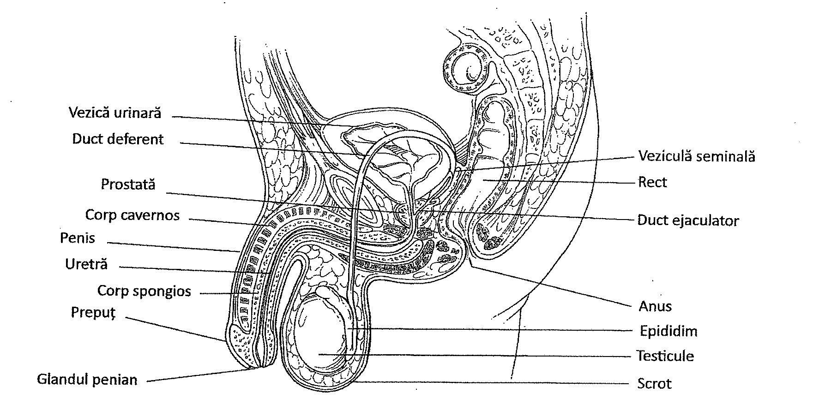
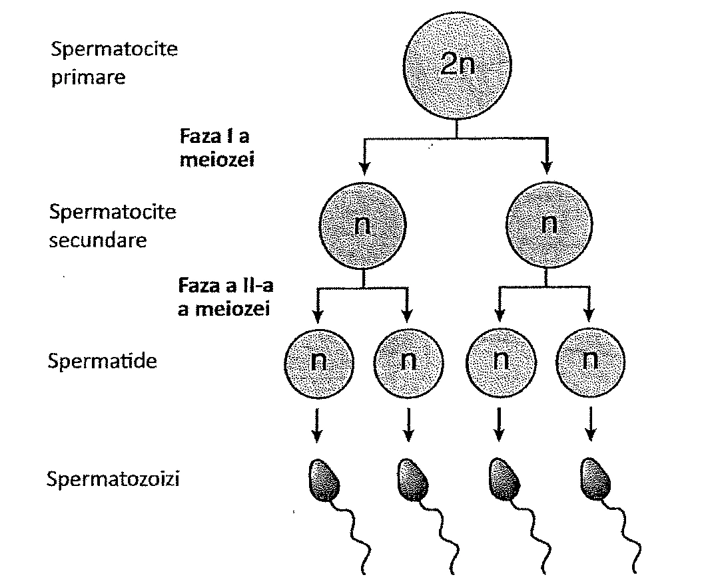
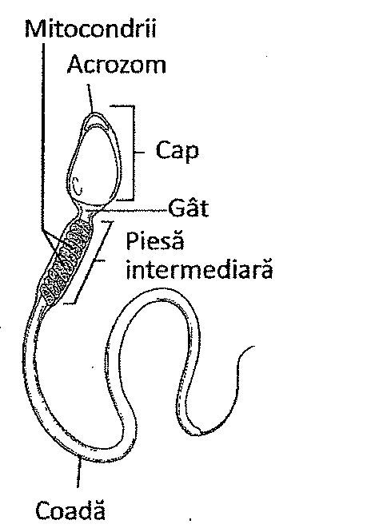
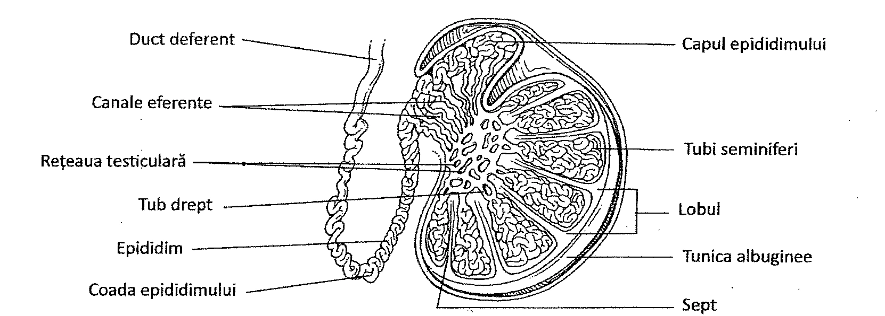
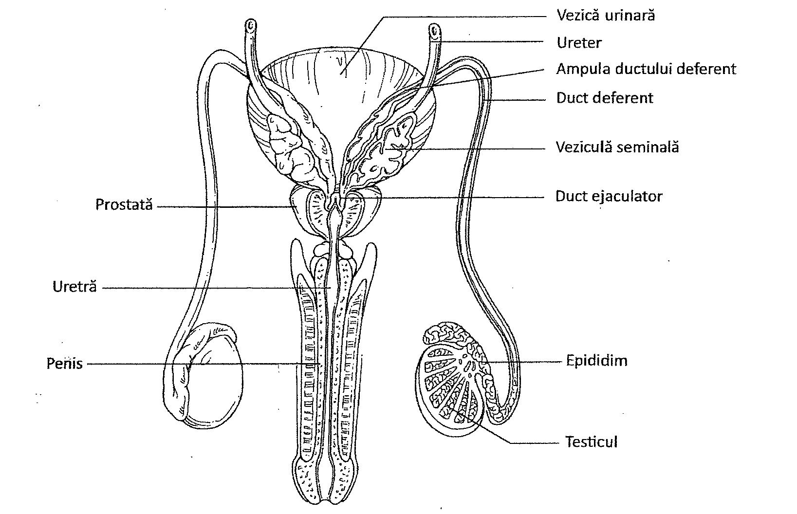

22. Sistemul reproducător masculin
Cuprinsul capitolului
- Testicule și spermatogeneză
- Ducte și organe anexe
- Hormoni masculini
22. Testiculele
Sistemul reproducător masculin este responsabil pentru producerea, stocarea, nutriția și transportul celulelor reproducătoare masculine. Celulele reproducătoare se numesc gameți. Sistemul reproducător masculin și feminin prezintă numeroase structuri similare: două organe de reproducere, numite gonade, care produc gameți și hormoni; ducte care primesc și transportă gameții; glande și organe anexe, care secretă lichide ce sunt transportate prin ducte; și un număr de organe și glande auxiliare asociate procesului de reproducere, numite organe genitale externe. Sistemul reproducător masculin este tratat în acest capitol, sistemul reproducător feminin fiind prezentat în Capitolul 23.
TESTICULELE
Testiculele sunt organele masculine de reproducere (Figura 22.1). Funcția lor este de a produce hormonii și spermatozoizii cu rol în procesele de reproducere masculină. Testiculul este un organ de formă ovalară, aplatizat, ce are aproximativ 5 cm lungime și 2,5 cm lățime.
Testiculele se găsesc în scrot, o structură sacciformă (în formă de „sac"), cu pereți groși, multistratificați, suspendată sub perineu și anterior de anus. Scrotul este împărțit în două compartimente separate, câte unul pentru fiecare testicul. Limita dintre cele două compartimente este marcată de o proeminență îngroșată, localizată pe suprafața scrotală, cunoscută sub numele de rafeu. În straturile profunde ale pielii scrotului se află un mușchi subțire neted, numit mușchiul dartos. Când acesta se contractă, conferă un aspect încrețit suprafeței scrotului.

SPERMATOGENEZA
Procesul prin care iau naștere spermatozoizii se numește spermatogeneză. Spermatogeneza începe la nivelul stratului cel mai extern de celule germinale din tubii seminiferi. Celulele primordiale (stem), numite spermatogonii produc, prin diviziuni mitotice, celule, care sunt treptat împinse înspre lumenul (interiorul) tubului seminifer. Aceste celule sunt numite spermatocite primare (Figura 22.2). Spermatocitele suferă apoi o diviziune meiotică, un proces în care spematocitele cu 46 de cromozomi per celulă, suferă o diviziune reducțională, pentru a da naștere unor celule cu 23 de cromozomi per celulă (Tabelul 22.2). Celulele care rezultă din meioză sunt numite spermatide. Spermatidele se maturează și formează spermatozoizii, prezenți în lumenul tubului seminifer.
| Faza | Procesul |
|---|---|
| Faza I (prima diviziune meiotică) | |
| Profaza I | Cromozomii omologi formează o tetradă în cadrul complexului sinaptonemal. Cromatidele cromozomilor omologi se suprapun, formând chiasme. Segmentele de cromatide pot trece de pe o cromatidă pe alta, crescând variabilitatea genetică |
| Metafaza I | Cromozomii pereche se grupează independent, pe măsură ce se aliniază în placa metafazică (ecuatorială) |
| Anafaza I | Cromozomii pereche se separă și se deplasează spre polii opuși ai celulei. Centromerii cromozomilor duplicați nu se divid |
| Telofaza I și Citokineza | Cromozomii pereche separați sunt distribuiți în mod egal între cele două celule fiice |
| Faza II (a doua diviziune meiotică) | |
| Interfaza | Faza intermediară în care nu are loc replicarea ADN |
| Profaza II | Cromozomii se condensează și se deplasează spre centrul celulei |
| Metafaza II | Centromerii se aliniază la placa metafazică (ecuatorială) |
| Anafaza II | Centromerii se clivează, cromozomii rezultați se deplasează spre polii opuși |
| Telofaza II și citokineza | Se formează patru celule fiice haploide, fiecare cu exact jumătate din numărul de cromozomi (23) față de celula mamă |

SPERMATOZOIZII
Rolul testiculelor este de a produce spermatozoizi. Fiecare spermatozoid are mai multe regiuni: cap, gât, piesa intermediară și coada.
Capul spermatozoidului este ovoid, aplatizat, condensat, cu un nucleu ce conține 23 de cromozomi. Extremitatea cefalică a capului spermatozoidului prezintă o zonă numită acrozom, sau cap acrozomial, care conține enzime cu rol în fertilizare. Gâtul spermatozoidului este foarte scurt, iar piesa intermediară conține microtubuli înconjurați de un strat intern de filamente groase și un strat extern ce conține mitocondrii. În mitocondrii se produce ATP-ul necesar pentru mișcările cozii spermatozoidului. Coada spermatozoidului conține filamente groase, înconjurate de un înveliș membranos (membrana celulară). Ea acționează ca un flagel, ce se mișcă și împinge astfel spermatozoidul înainte (Figura 22.3).
Celulele sustentaculare (de susținere) funcționează ca o barieră între vasele de sânge și tubii seminiferi, protejând spermatozoizii în curs de dezvoltare de sistemul imunitar. Celulele interstițiale produc hormoni sexuali masculini, inclusiv testosteron, asigurând în testicul o concentrație mare de testosteron, necesară pentru producerea spermatozoizilor.


Dezvoltarea testiculelor nu face parte din tematica de admitere 2025.
Spermatogeneza22. Ducte și organe anexe
DUCTE ȘI ORGANE ANEXE
O serie de ducte și organe anexe contribuie la îndeplinirea funcțiilor fiziologice ale testiculelor, prin evacuarea spermatozoizilor din organism și prin activarea lor.
CĂILE SISTEMULUI REPRODUCĂTOR MASCULIN
Pentru a ajunge în mediul extern, spermatozoizii maturi trec printr-un sistem de ducte cu mai multe subdiviziuni. Prima subdiviziune a sistemului este epididimul. Spermatozoizii maturi dar imobili ajung în epididim din canalele eferente care provin din rețeaua testiculară. Epididimul se află de-a lungul marginii posterioare a testiculelor și constă dintr-un tub alungit, răsucit și încolăcit.
Celulele care căptușesc epididimul ajustează compoziția lichidului spermatic prin adăugarea de secreții. pH-ul lichidului este acid, datorită produșilor de degradare ai spermei stocate. Epididimul este și locul unde sunt resorbiți spermatozoizii deteriorați și reziduurile. De asemenea, este locul în care spermatozoizii devin mobili, proces care durează aproximativ două săptămâni.
După ce părăsesc epididimul, spermatozoizii intră în canalul următor, ductul deferent, numit și vas deferens. Ductul deferent este o extensie tubulară a epididimului, ce traversează canalul inghinal înspre cavitatea abdominală. În cavitatea abdominală, ductul deferent trece lateral de vezica urinară, spre marginea postero-superioară a glandei prostatice. Chiar înainte de a ajunge la glanda prostatică, ductul deferent se lărgește într-o porțiune denumită ampulă. Funcția ductului deferent este de a propulsa și conduce lichidul seminal de la epididimul fiecărui testicul. La nivelul ampulei, cele două ducte deferente se unesc cu ductele care vin de la veziculele seminale. Prin unirea lor se formează ductele ejaculatoare. Aceste ducte, relativ scurte, traversează prostata și își varsă conținutul în uretră (Figura 22.5).

Uretra se întinde de la vezica urinară la vârful penisului. Ea este împărțită în trei porțiuni: porțiunea prostatică, membranoasă și peniană. Uretra prostatică trece prin mijlocul prostatei, primind secrețiile acesteia. Uretra membranoasă este un segment scurt ce străbate planșeul muscular al cavității pelviene. Uretra peniană se extinde prin penis la orificiul uretral extern din vârful penisului și primește secrețiile glandelor bulbouretrale.
ORGANE ANEXE
Există mai multe organe anexe care secretă fluide necesare formării spermei, sau servesc drept organe pentru transportul acesteia în timpul copulației. Un astfel de organ este vezicula seminală. Vezicula seminală este un organ pereche, alcătuit din structuri sacciforme, drenate de niște ducte care fuzionează cu ductul deferent. Vezicula seminală secretă și hormoni, cunoscuți sub numele de prostaglandine, și adaugă fluide nutritive (în special fructoză) pentru a asigura substanțe nutritive spermatozoizilor în timpul procesului de ejaculare. Lichidul produs este alcalin pentru a neutraliza aciditatea ce se dezvoltă în epididim, iar lichidul produs de vezicula seminală reprezintă aproximativ 60% din volumul total al lichidului seminal ce intră în compoziția spermei.
Un alt organ auxiliar important este glanda prostatică (prostata). Aceasta este o glandă unică, ce secretă un lichid ușor alcalin, ce contribuie la mobilitatea spermatozoizilor prin neutralizarea acidității naturale din vagin. Prostata conține fibre musculare netede cu rol de suport, și înconjoară uretra. Creșterea ei în dimensiuni la vârstnici poate îngreuna urinarea. Secreția prostatei constituie aproximativ 30% din volumul lichidul seminal.
Glandele bulbouretrale sunt două glande mici, situate în apropierea rădăcinii penisului. Ele secretă mucus lubrifiant și substanțe alcaline care neutralizează aciditatea vaginală și activează spermatozoizii. Secrețiile glandelor bulbouretrale, ale prostatei, veziculei seminale și ale testiculelor, împreună cu spermatozoizii, formează sperma.
Un alt organ este penisul. Penisul are rol în micțiune și copulație. Este alcătuit din baza penisului sau rădăcina, corpul (axul) și glandul penian. Glandul este porțiunea care înconjoară orificiul uretral extern. Un pliu de piele numit prepuț, înconjoară glandul penisului. Circumcizia este intervenția chirurgicală prin care se îndepărtează prepuțul.
Cea mai mare parte a corpului penisului este reprezentată de trei mase de țesut erectil. Țesutul erectil conține un labirint de canale vasculare separate de țesut conjunctiv și fibre musculare netede. Cele trei mase de țesut erectil sunt corpii cavernoși (2) și corpul spongios. În timpul excitării sexuale, impulsurile din componenta parasimpatică a sistemului nervos determină dilatarea arteriolelor din țesutul erectil, ceea ce are drept consecință creșterea substanțială a fluxului sanguin în aceste țesuturi și colabarea venelor. Rețeaua vasculară devine congestionată cu sânge și are loc erecția. În timpul apogeului sexual, sperma ajunge prin uretră la orificiul uretral extern. După ejacularea spermei, impulsuri din componenta simpatică a sistemului nervos provoacă constricția arteriolelor, ceea ce diminuă aportul de sânge. Pe măsură ce venele evacuează sângele din țesutul erectil, penisul devine flasc. Persistența stimulilor simpatici menține vasoconstricția și starea flască.
Volumul de spermă ejaculat în mod obișnuit măsoară aproximativ 2-5 mililitri. Acest volum, numit ejaculat, conține spermatozoizi, lichid seminal și enzime. Numărul spermatozoizilor este de aproximativ 20-100 de milioane pe mililitru de spermă. Lichidul este un amestec de secreții glandulare provenite din organele anexe. Enzimele din lichidul spermatic includ o protează și alte enzime ce contribuie la fertilizare. Contracțiile peristaltice din căile sistemului reproducător deplasează sperma în timpul ejaculării. Contracțiile glandelor, prin evacuarea produsului lor de secreție, cresc volumul spermei.
22. Hormonii masculini
HORMONII MASCULINI
Mai mulți hormoni contribuie la procesul de reproducere masculin. Hipofiza anterioară eliberează hormonul foliculo-stimulant (FSH), precum și hormonul luteinizant (LH).
FSH-ul induce spermatogeneza în tubii seminiferi, în timp ce LH-ul asistă spermatogeneza și stimulează producția de testosteron din celulele interstițiale (Tabelul 22.3).
Testosteronul, un hormon androgen, este un hormon sexual masculin, produs de celulele interstițiale ale testiculelor. La făt, testosteronul controlează diferențierea țesuturilor specifice sexului masculin și contribuie la coborârea testiculelor în scrot. Până la pubertate este produs puțin testosteron. După pubertate, testosteronul are numeroase funcții, cum ar fi inducerea maturării spermatozoizilor, asigurarea bunei funcționări a organelor anexe și a ductelor sistemului reproducător masculin, influențarea dezvoltării caracterelor sexuale secundare masculine, stimularea proceselor metabolice care au legătură cu sinteza proteinelor și creșterea masei musculare, influențarea comportamentului sexual și al apetitului sexual. Alți androgeni accelerează pubertatea și inițiază maturarea sexuală și apariția caracterelor secundare masculine.
Eliberarea de FSH și LH este reglată de un hormon hipotalamic, numit hormonul de eliberare a gonadotropinelor (Gonadotropin Releasing Hormone GnRh). Împreună cu FSH-ul și LH-ul, acest hormon este implicat într-un mecanism de feedback negativ, pentru a controla sinteza și secreția testosteronului.
| Hormon | Origine | Efecte principale | Control |
|---|---|---|---|
| Hormonul eliberator al gonadotropinelor (GnRH) | Hipotalamus | Determină eliberarea de FSH și LH de la nivelul hipofizei; crește nivelurile sanguine ale FSH și LH | - |
| Hormonul foliculo-stimulant (FSH) | Hipofiză | Stimulează maturarea tubilor seminiferi și producerea spermei | Hipotalamus |
| Hormonul luteinizant (LH) | Hipofiză | Stimulează maturarea celulelor interstițiale | Hipotalamus |
| Testosteron | Testicule | Produce și menține caracterele sexuale masculine; stimulează producerea spermatozoizilor și inhibă producerea de LH | LH |